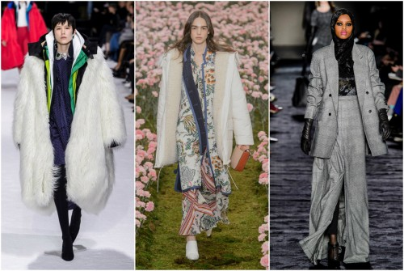
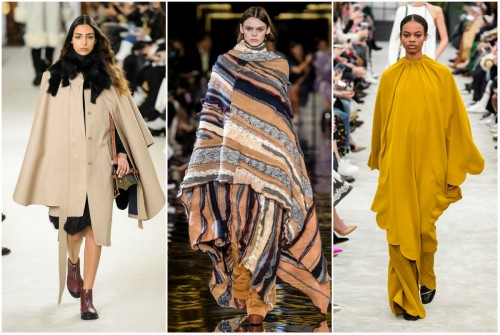
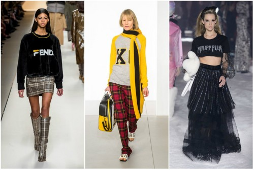
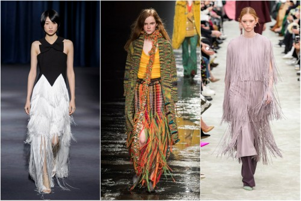

Bellisima

Модни тенденции за сезон есен–зима 2018/19 година
Многолика, пъстра, дръзка - такава е модата за есен/зима 2018-19. Новият моден сезон е още по-смел и иновативен в сравнение с предишните, а дизайнерите експериментират като комбинират нови и стари тенденции, заиграват се с контрастни материи и цветове.
Мода на пластове
Тази зима можем да сме спокойни, че дизайнерите мислят за нас и гледат да ни предпазят от студа. Колкото повече пластове дрехи носите, толкова по-добре. Наслагването позволява заигравка с материи, цветове и принтове, демонстрира проява на въображение и моден усет, освен това допълва идеята за "скромната" и "срамежлива" визия, която не показва плът.Най-актуалната тенденция е комбинацията на две връхни дрехи - сако и палто, яке и палто, жилетка и яке.
Наметало или шал одеяло
Модерната супержена вече има своето наметало, буквално. В търсене на топлина и уют в студените дни, дизайнерите ни подаряват тази тенденция - елегантни наметки, пончо, дебели и широки шалове, с които да се увием като в одеяло.
Блузи с лого
Ако до преди време се смяташе за проява на лош вкус да носиш дреха, чиято марка е щампована отпред, то днес това е топ тенденция. Дизайнерите налагат своя почерк, като изписват имената си върху блузи, сака, чанти.
Ресни
Ресните също владеят модния подиум този сезон. Тълкувайте присъствието им както решите - някои дизайнери ги обвързват с модата от 20-те години на миналия век, други с бохо и хипи стила от 70-те, а трети с каубойската мода. Факт е, че ресните присъстват по дрехи и аксесоари, и са задължителен елемент тази есен.
Dolce&Gabbana Fall Winter 2018/19 Women's Fashion Show